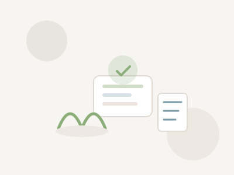

👁️
Flujo de pacientes
Perfil en nuestro directorio para que pacientes que buscan apoyo puedan agendar contigo.
Únete a una red de psicólogos y tanatólogos. Recibe pacientes sin invertir en publicidad y accede a conferencias, bibliografía y materiales para tus sesiones.
Perfil en nuestro directorio para que pacientes que buscan apoyo puedan agendar contigo.
Dos conferencias al mes grabadas, impartidas por especialistas en psicología y tanatología.
Acceso a libros, mapas mentales, actividades y recursos que puedes usar en tus sesiones.
Tú decides cuándo atender. Cubrimos turnos de 7 a.m. a 11 p.m., los 7 días de la semana.
En cada consulta aislada de $400, tú recibes $300 y $100 se destina a la plataforma. Sin comisiones complicadas ni sorpresas.
Espacios de contención y supervisión para cuidar también de ti mientras cuidas a otros.
Al unirte, accedes a una intranet sencilla donde gestionas tu agenda, consumes formación y encuentras recursos para acompañar mejor a tus pacientes.

Todo lo que necesitas para recibir pacientes y seguir formándote.
Cédula profesional vigente en Psicología. Experiencia en atención de ansiedad, depresión, salud mental o áreas afines.
Cédula profesional y formación o certificación comprobable en Tanatología o Acompañamiento en Duelo.
Además revisamos competencias digitales, habilidades de escucha activa y manejo de crisis. El proceso incluye un formulario, una entrevista con roleplay y una inducción a la plataforma.
Aplicar como profesionalCompleta tu solicitud y te contactaremos en 24–48 horas.
Aplicar como profesional